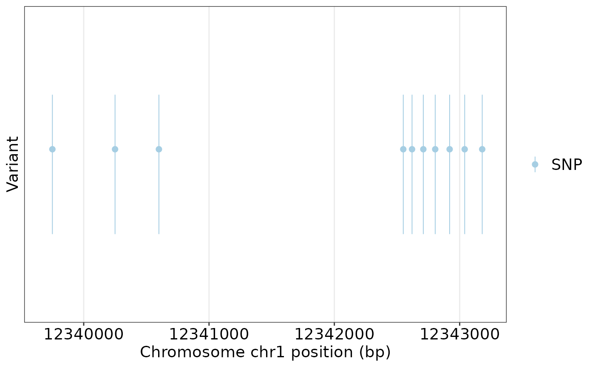

Reads VCF records and stores them as genomic point variants. Standard VCF
columns are always imported. If genotype sample columns are present, they are
preserved for haplotype analysis. For bgzip-compressed VCF files with a tabix
index, chrom, start, and end can be supplied to load only a genomic
interval instead of parsing the whole VCF file.
Usage
read_vcf(
file,
keep_genotype = TRUE,
mode = c("auto", "memory", "lazy"),
chrom = NULL,
start = NULL,
end = NULL,
verbose = TRUE,
progress = interactive() && isTRUE(verbose)
)Arguments
- file
VCF file path. Plain VCF, gzip-compressed VCF, and bgzip VCF are supported.
- keep_genotype
Logical. Whether to keep FORMAT and sample genotype columns.
- mode
Reading mode.
memoryparses records immediately,lazystores indexed VCF metadata only, andautouses lazy mode for indexed VCF files when no region is supplied.- chrom
Optional chromosome name for indexed regional reading.
- start
Optional 1-based region start for indexed regional reading.
- end
Optional 1-based region end for indexed regional reading.
- verbose
Logical. Whether to print progress messages.
- progress
Logical. Whether to print a compact stage-level progress indicator.
Examples
vcf_file <- system.file("extdata", "gtr_demo_variants.vcf", package = "GeneTrackR")
variants <- read_vcf(vcf_file, mode = "memory", verbose = FALSE)
region_variants <- retrieve_vcf(
variants,
chrom = "chr1",
start = 12339700,
end = 12343200,
as = "VariantTrack",
verbose = FALSE
)
plot_variant(region_variants, chrom = "chr1", start = 12339700, end = 12343200)
#> [GeneTrackR] Retrieved variants: 10.
